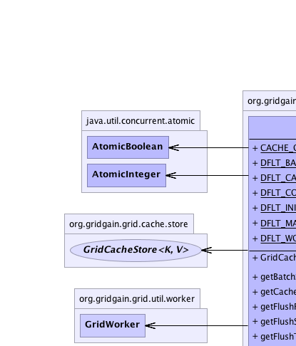
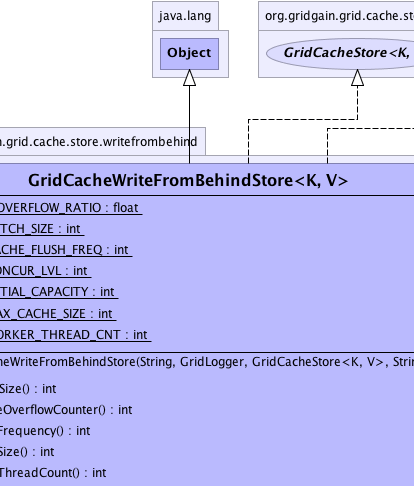
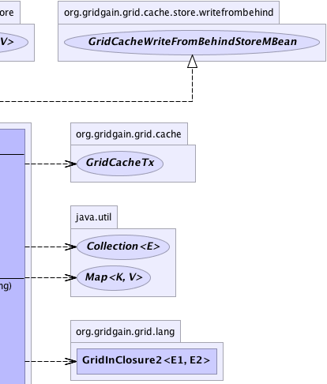
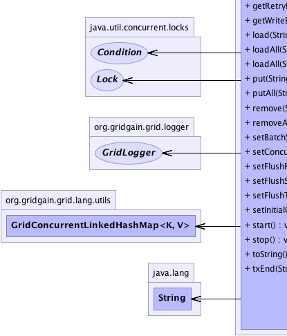
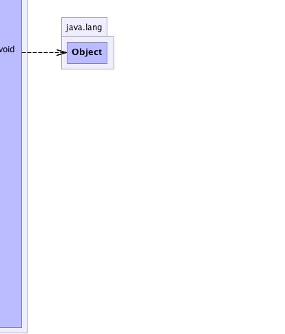

org.gridgain.grid.cache.store.writefrombehind.GridCacheWriteFromBehindStore<K,V>
org.gridgain.grid.cache.store.writefrombehind.GridCacheWriteFromBehindStore<K,V>
|
GridGain™ 3.6.0c
Community Edition |
|||||||||
| PREV CLASS NEXT CLASS | FRAMES NO FRAMES | |||||||||
| SUMMARY: NESTED | FIELD | CONSTR | METHOD | DETAIL: FIELD | CONSTR | METHOD | |||||||||
java.lang.Object
public class GridCacheWriteFromBehindStore<K,V>
Internal wrapper for a GridCacheStore that enables write-from-behind logic.
| Wiki | |
| Forum |
|  |  |  |
|  |  |
 |
| Field Summary | |
|---|---|
static float |
CACHE_OVERFLOW_RATIO
Overflow ratio for critical cache size calculation. |
static int |
DFLT_BATCH_SIZE
Default value for maximum batch size |
static int |
DFLT_CACHE_FLUSH_FREQ
Default value for write cache flush frequency is 5 seconds. |
static int |
DFLT_CONCUR_LVL
Default concurrency level of write cache. |
static int |
DFLT_INITIAL_CAPACITY
Default write cache initial capacity. |
static int |
DFLT_MAX_CACHE_SIZE
Default max cache size. |
static int |
DFLT_WORKER_THREAD_CNT
Default count of worker threads. |
| Constructor Summary | |
|---|---|
GridCacheWriteFromBehindStore(String gridName,
GridLogger log,
GridCacheStore<K,V> store,
String cacheName)
Creates a write-from-behind cache store for the given store and cache name. |
|
| Method Summary | |
|---|---|
int |
getBatchSize()
Gets the maximum count of similar (put or remove) operations that can be grouped to a single batch. |
int |
getCacheOverflowCounter()
Gets count of write buffer overflow events since initialization. |
int |
getFlushFrequency()
Gets the cache flush frequency. |
int |
getFlushSize()
Gets the maximum size of the write cache. |
int |
getFlushThreadCount()
Gets the number of flush threads that will perform store update operations. |
int |
getRetryEntriesCount()
Gets count of cache entries that are in a store-retry state. |
int |
getWriteBufferSize()
Gets count of entries that were processed by the write-from-behind store and have not been flushed to the underlying store yet. |
V |
load(String cacheName,
GridCacheTx tx,
K key)
Loads value for the key from underlying persistent storage. |
void |
loadAll(String cacheName,
GridCacheTx tx,
Collection<? extends K> keys,
GridInClosure2<K,V> c)
Loads all values for given keys and passes every value to the provided closure. |
void |
loadAll(String cacheName,
GridInClosure2<K,V> c,
Object... args)
Default empty implementation. |
void |
put(String cacheName,
GridCacheTx tx,
K key,
V val)
Stores a given value in persistent storage. |
void |
putAll(String cacheName,
GridCacheTx tx,
Map<? extends K,? extends V> map)
Stores given key value pairs in persistent storage. |
void |
remove(String cacheName,
GridCacheTx tx,
K key)
Removes the value identified by given key from persistent storage. |
void |
removeAll(String cacheName,
GridCacheTx tx,
Collection<? extends K> keys)
Removes all vales identified by given keys from persistent storage. |
void |
setBatchSize(int batchSize)
Sets the maximum count of similar operations that can be grouped to a single batch. |
void |
setConcurrencyLevel(int concurLvl)
Sets concurrency level for the write cache. |
void |
setFlushFrequency(int cacheFlushFreq)
Sets the cache flush frequency. |
void |
setFlushSize(int cacheMaxSize)
Sets the maximum size of the write cache. |
void |
setFlushThreadCount(int flushThreadCnt)
Sets the number of threads that will perform store update operations. |
void |
setInitialCapacity(int initialCap)
Sets initial capacity for the write cache. |
void |
start()
Performs all the initialization logic for write from behind cache store. |
void |
stop()
Performs shutdown logic for store. |
String |
toString()
|
void |
txEnd(String cacheName,
GridCacheTx tx,
boolean commit)
Tells store to commit or rollback a transaction depending on the value of the 'commit'
parameter. |
| Methods inherited from class java.lang.Object |
|---|
clone, equals, finalize, getClass, hashCode, notify, notifyAll, wait, wait, wait |
| Field Detail |
|---|
public static final int DFLT_INITIAL_CAPACITY
public static final float CACHE_OVERFLOW_RATIO
public static final int DFLT_CONCUR_LVL
public static final int DFLT_MAX_CACHE_SIZE
public static final int DFLT_WORKER_THREAD_CNT
public static final int DFLT_CACHE_FLUSH_FREQ
public static final int DFLT_BATCH_SIZE
| Constructor Detail |
|---|
public GridCacheWriteFromBehindStore(String gridName,
GridLogger log,
GridCacheStore<K,V> store,
@Nullable
String cacheName)
gridName - Grid name.log - Grid logger.store - GridCacheStore that need to be wrapped.cacheName - Name of the cache.| Method Detail |
|---|
public void setInitialCapacity(int initialCap)
initialCap - Initial capacity.public void setConcurrencyLevel(int concurLvl)
concurLvl - Concurrency level.public void setFlushSize(int cacheMaxSize)
cacheMaxSize - Max cache size.public int getFlushSize()
getFlushSize in interface GridCacheWriteFromBehindStoreMBeanpublic void setFlushThreadCount(int flushThreadCnt)
flushThreadCnt - Count of worker threads.public int getFlushThreadCount()
getFlushThreadCount in interface GridCacheWriteFromBehindStoreMBeanpublic void setFlushFrequency(int cacheFlushFreq)
cacheFlushFreq - Time interval value in milliseconds.public int getFlushFrequency()
getFlushFrequency in interface GridCacheWriteFromBehindStoreMBeanpublic void setBatchSize(int batchSize)
batchSize - Maximum count of batch.public int getBatchSize()
getBatchSize in interface GridCacheWriteFromBehindStoreMBeanpublic int getWriteBufferSize()
getWriteBufferSize in interface GridCacheWriteFromBehindStoreMBean
public void start()
throws GridException
GridException - If cache cannot be started due to some reasons.public int getCacheOverflowCounter()
GridCacheWriteFromBehindStoreMBean
getCacheOverflowCounter in interface GridCacheWriteFromBehindStoreMBeanpublic int getRetryEntriesCount()
GridCacheWriteFromBehindStoreMBean
getRetryEntriesCount in interface GridCacheWriteFromBehindStoreMBeanValueStatus#RETRY state.
public void stop()
throws GridException
GridException - If shutdown failed for some reason.
public void loadAll(@Nullable
String cacheName,
GridInClosure2<K,V> c,
@Nullable
Object... args)
throws GridException
GridCache.loadCache(GridPredicate2, long, Object...) method
is explicitly called.
loadAll in interface GridCacheStore<K,V>GridException - If loading failed.cacheName - Cache name (null for default no-name cache).c - Closure for loaded values.args - Arguments passes into
GridCache.loadCache(org.gridgain.grid.lang.GridPredicate2 , long, Object...) method.
public void loadAll(@Nullable
String cacheName,
@Nullable
GridCacheTx tx,
@Nullable
Collection<? extends K> keys,
GridInClosure2<K,V> c)
throws GridException
For every loaded value method GridInClosure.apply(Object) should be called on
the passed in closure. The closure will then make sure that the loaded value is stored
in cache.
loadAll in interface GridCacheStore<K,V>GridException - If load failed.cacheName - Cache name (null for default no-name cache).tx - Cache transaction.keys - Collection of keys to load.c - Closure to call for every loaded element.
public V load(@Nullable
String cacheName,
@Nullable
GridCacheTx tx,
K key)
throws GridException
load in interface GridCacheStore<K,V>GridException - If load failed.cacheName - Cache name (null for default no-name cache).tx - Cache transaction.key - Key to load.
null if value was not found.
public void putAll(@Nullable
String cacheName,
@Nullable
GridCacheTx tx,
@Nullable
Map<? extends K,? extends V> map)
throws GridException
null.
putAll in interface GridCacheStore<K,V>GridException - If store failed.cacheName - Cache name (null for default no-name cache).tx - Cache transaction, if write-from-behind is not enabled, null otherwise.map - Values to store.
public void put(@Nullable
String cacheName,
@Nullable
GridCacheTx tx,
K key,
V val)
throws GridException
null.
put in interface GridCacheStore<K,V>GridException - If put failed.cacheName - Cache name (null for default no-name cache).tx - Cache transaction, if write-from-behind is not enabled, null otherwise.key - Key to put.val - Value to put.
public void removeAll(@Nullable
String cacheName,
@Nullable
GridCacheTx tx,
@Nullable
Collection<? extends K> keys)
throws GridException
null.
removeAll in interface GridCacheStore<K,V>GridException - If remove failed.cacheName - Cache name (null for default no-name cache).tx - Cache transaction, if write-from-behind is not enabled, null otherwise.keys - Keys to remove.
public void remove(@Nullable
String cacheName,
@Nullable
GridCacheTx tx,
K key)
throws GridException
null.
remove in interface GridCacheStore<K,V>GridException - If remove failed.cacheName - Cache name (null for default no-name cache).tx - Cache transaction, if write-from-behind is not enabled, null otherwise.key - Key to remove.
public void txEnd(@Nullable
String cacheName,
GridCacheTx tx,
boolean commit)
throws GridException
'commit'
parameter.
Note that if explicit transactions are not used in code, then it is possible
to commit or rollback transactions directly in 'put(..)', or 'remove(..)'
methods. In that case, this method should be left empty (GridCacheStoreAdapter provides
empty implementation of this method).
txEnd in interface GridCacheStore<K,V>GridException - If commit or rollback failed. Note that commit failure in some cases
may bring cache transaction into GridCacheTxState.UNKNOWN which will
consequently cause all transacted entries to be invalidated.cacheName - Name of the cache (null for default no-name cache).tx - Cache transaction being ended.commit - True if transaction should commit, false for rollback.public String toString()
toString in class Object
|
GridGain™ 3.6.0c
Community Edition |
|||||||||
| PREV CLASS NEXT CLASS | FRAMES NO FRAMES | |||||||||
| SUMMARY: NESTED | FIELD | CONSTR | METHOD | DETAIL: FIELD | CONSTR | METHOD | |||||||||
|
GridGain - High Performance Cloud Computing
|
|

|
|